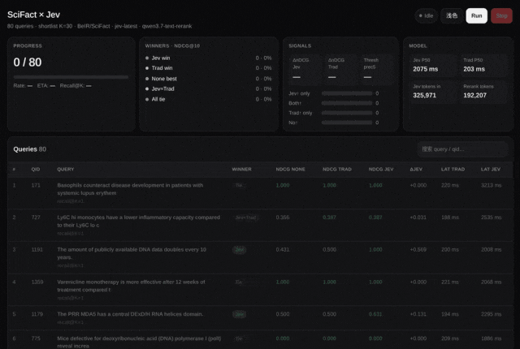
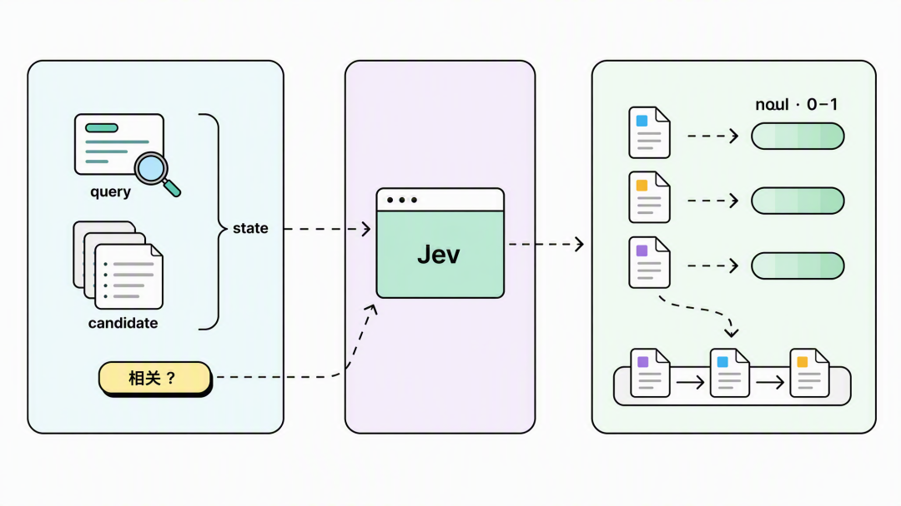
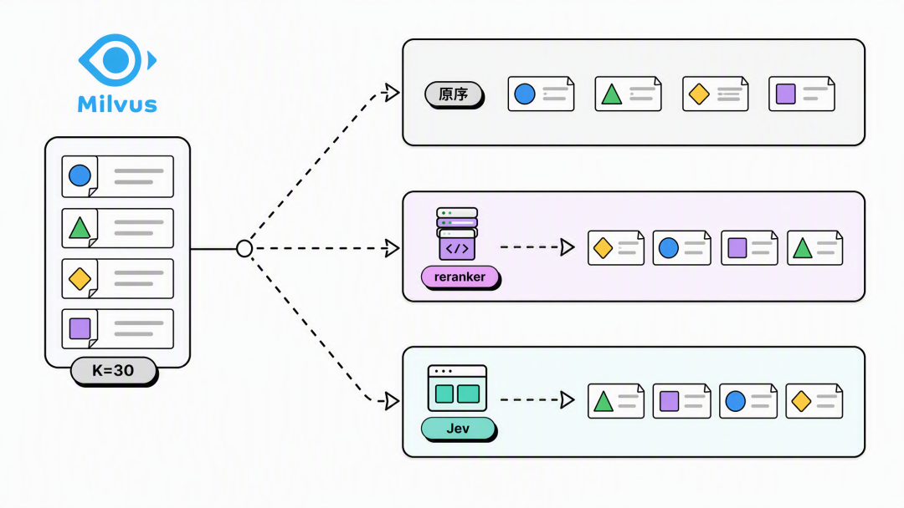
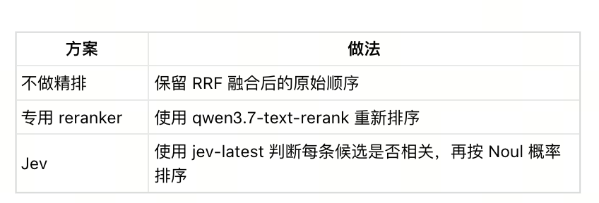
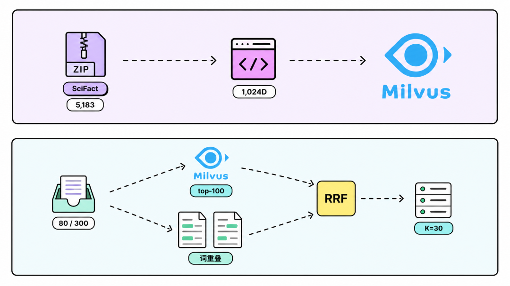
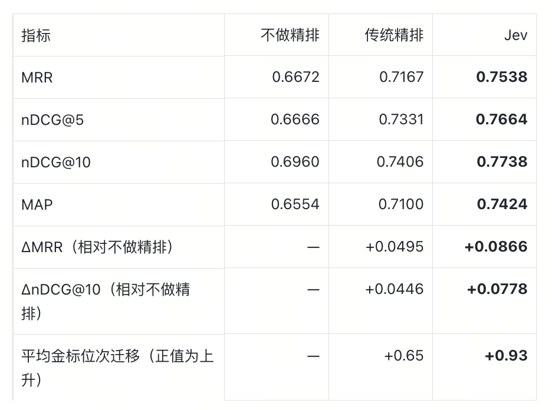
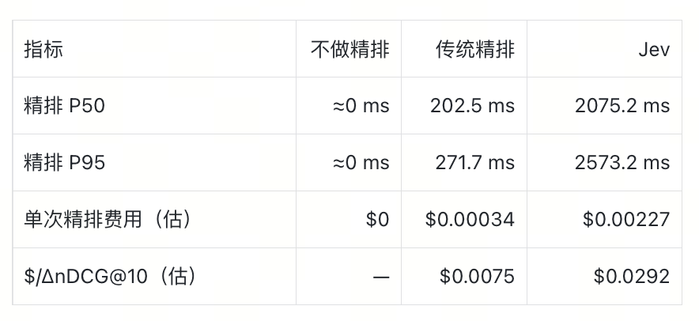
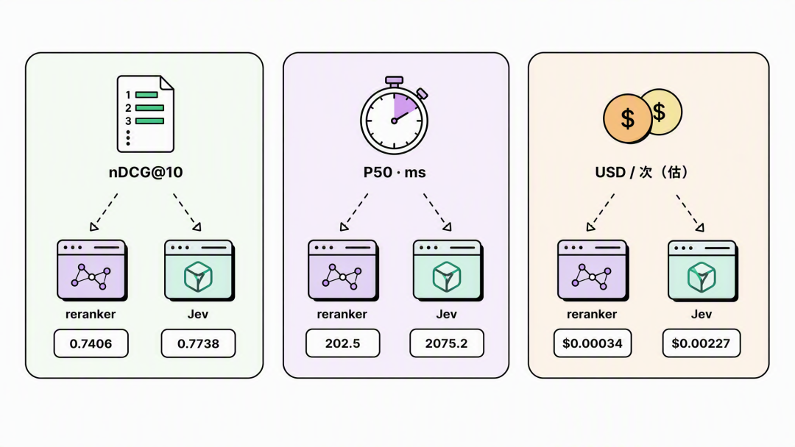
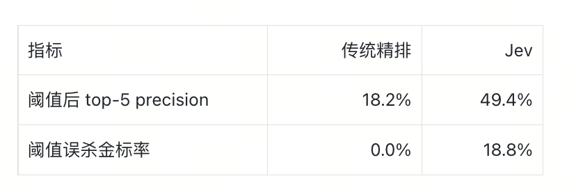
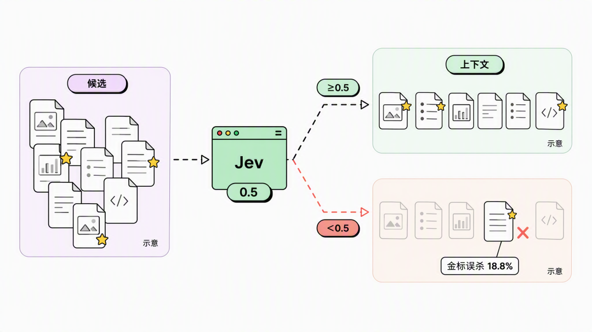

Milvus + SciFact 80 条实测对照 · 收录自第 11 章知识库，查看来源与登记信息 ↗
实验对比｜爆火的Jev能替代Rerank模型吗？
前不久，TypeSafe发布的 Jev模型，很快引发全网刷屏。
作为全球首个System One Model， Jev和我们熟悉的 LLM 不同，它的目标不是生成文字，而是接收当前状态和一组明确的问题，直接返回程序可以使用的结构化判断和概率。
相比传统大模型，它的效率更高，成本更低。这也使得Jev在搜索、浏览器 Agent、上下文管理、reranking 场景中，具备相当的优势。
比如在做rerank的时候，过去我们需要使用专用 reranker或者让 LLM 判断每篇文档是否相关；换成 Jev，则可以直接询问每篇候选是否与 query 相关，再把返回概率用于排序。
但Jev 相比现有 reranker到底表现如何？
我们做了一组实验。以Milvus作为默认的向量数据库，然后对比：不做精排、qwen3.7-text-rerank 精排和 Jev 精排，比较三者的排序效果与调用代价，并进一步测试阈值过滤表现。

01 · Jev 是如何参与精排的？
召回结束后，reranker 会给候选重新打分。包括 qwen3.7-text-rerank 在内的专用 reranker，会根据 query 和候选文档输出分数，再按分数重新排序。
而Jev 提供的是另一种输出方式。Jev 的一次请求主要包含两部分：state 和 questions。state 是模型判断时需要看到的信息，questions 定义它要回答什么。它支持 Noul、Choice、Score 等不同类型的判断，其中 Noul 用于 Yes / No 问题，并返回 Yes 的概率。
因此，用 Jev 做 reranking 时，可以把“相关性”写成一个 Yes / No 问题：
Query: 用户的问题
Candidate: 候选文档
Question: 这条 Candidate 是否与 Query 相关？
假设三个候选分别得到：
Candidate A → 0.91
Candidate B → 0.34
Candidate C → 0.76最终顺序就是：
A → C → BJev 不会生成“这篇文档为什么相关”的解释，也不会一次生成一整份排行榜。最终的排序，需要专门的代码来完成。
这套做法还有一个和普通生成模型不同的接口特点。
一次 Jev 请求可以同时包含多道 Noul，这些问题并行求值。questions 里也可以带结构化数据，例如固定一个主体，把不同候选分别放进多道 question，一次请求返回多个判断结果。
不过，这次实验没有使用这种批量写法。
我们采用了更直接的实现：
1 个 query
×
30 个 candidates
=
30 个 query-document pair每个 pair 单独请求 Jev，再并发等待结果。
这也是 TypeSafe 当前官方 reranking cookbook 使用的方式：每个 candidate 一次调用，多条请求并发执行。
这点会直接影响后面的延迟结果。

02 · 实验设计思路
这次实验只比较固定候选集上的精排效果。因此，默认的向量数据库都选用 Milvus，三条路径本身也共享同一份 shortlist，观察后续的 MRR、nDCG、MAP 和金标位次变化。
数据集使用的是BEIR 中的 SciFact。SciFact 的任务是根据一条科学 claim，从论文语料中找到相关证据文档。整个语料包含 5,183 篇文档，测试集包含 300 条查询。这次按照固定随机种子抽取其中 80 条。

第一步：用 Milvus 生成候选集
先使用 qwen3.7-text-embedding 为 5,183 篇文档生成 1,024 维向量，写入 Milvus，检索度量使用 IP。
从 300 条测试查询中，按固定随机种子抽取 80 条。每条 query 先从 Milvus 中召回 top-100。
此外，考虑到只用向量检索容易漏掉部分关键词高度匹配的结果，因此实验另外增加了一路基于词重叠的检索，再用 RRF 融合两路排序，截取前 30 条，作为后续精排共同使用的 shortlist。
注：这里的关键词通道采用词重叠近似，没有使用 Milvus 原生 BM25。因此，这次实验只讨论固定候选集上的精排效果，不代表完整 Hybrid Search pipeline 的效果。
第二步：三种方案对比
拿到同样的 30 条候选后，分别进入三条方案实验测试：

embedding、Milvus、关键词召回、RRF 和候选数量全部保持一致。
这样，最终指标的变化主要来自精排。
第三步：怎么评价排序效果
我们主要看 MRR、nDCG 和 MAP，以及精排耗时和 token 用量这几个指标。
MRR 更关注第一条相关结果出现得够不够早。如果正确文档原本排在第 8，精排后到了第 1，MRR 会明显改善。
nDCG 关注的是前 K 个结果整体排得好不好。这次同时关注 nDCG@5 和 nDCG@10，因此不仅关注第一名，也关注前几位整体有没有变好。
MAP 会综合多个相关结果的位置。
除此之外，我们还统计了金标文档——也就是 SciFact 标注为相关的文档——在 rerank 前后平均移动了多少位。
排序完成后，根据 SciFact 的相关性标注计算指标。过滤实验中，传统精排使用中位数阈值，Jev 使用 0.5 阈值，分别统计过滤后的 top-5 precision 和金标误杀率；另外统计 Jev 分数不低于 0.7 的候选中，实际相关的比例。

03 · 实验结果：Jev 效果更好，但代价也明显更高
先说结论，三个方案的Recall@K 均为 90%（这主要是因为三种方案使用的是同一份候选集）。在固定召回结果后，Jev 的平均排序指标最高。

相对不做精排，传统精排的 nDCG@10 提高 0.0446，Jev 提高 0.0778。Jev 比传统精排高 0.0332。这组结果来自 80 条 SciFact 查询，尚未进行显著性检验。
但Jev 的调用代价更高：

Jev 的精排 P50 约为传统精排的 10.2 倍，单次估算费用约为 6.7 倍。所以，在离线检索、数据清洗或者不敏感于一两秒延迟的任务，Jev的优势会很突出，但是在线场景中，如果仅精排就增加接近两秒，后面的生成模型还没有开始工作，整体体验很容易被拖慢。
（实验记录的是本次逐候选并发调用的精排耗时，也就是说，这两秒不仅包含并发执行的时间，也包含30次独立 API 调用的开销。TypeSafe 当前官方 reranking cookbook 同样是一个 candidate 一次请求，再并发执行。但是在在线场景中，我们也可以尝试固定一个主体，把多个 candidate 分别放进多道 question，一次返回所有结果，来节约时间。
本系列下一篇文章，我们会分享jev的开源实现，来解决这些问题)

另外，考虑到 Jev 已经返回相关概率，能不能设置一个 threshold，直接删掉低分文档？这样不仅能排序，还能减少最终交给 LLM 的上下文。
因此，这次实验里，我们设计：
qwen reranker 使用中位数阈值；
Jev 使用 0.5 阈值。
结果如下：

Jev 使用 0.5 阈值后，top-5 precision 达到 49.4%，但同时误删了 18.8% 的金标。也就是说，它确实把候选集筛得更干净，但代价是丢掉了一部分真正相关的文档。对 RAG 来说，这个代价可能比多保留几条无关文档更严重，因为被删掉的可能正是回答问题所需要的证据。
另外，由于qwen 使用中位数阈值，Jev 使用固定 0.5，两边的过滤强度并不相同，这也会直接影响最终的实验结果。
因此，Jev 的概率可以直接用于候选过滤，但阈值需要根据 RAG 对“误删证据”的容忍度来调，实验中的0.5 并不是默认答案。

04 · 推荐几个 Jev 项目
如果想看看 Jev 除了精排还能怎么用，可以先从几个具体项目入手。
fast-jev-compaction是一个 Claude Code 插件。每次工具调用后，它让 Jev 判断哪些内容应该保留、压缩或丢弃，用来控制上下文不断膨胀。
jev-browser把 LLM 和 Jev 放在浏览器操作的不同位置：LLM 负责规划，Jev 负责判断页面上的具体选择，同时提供 CLI、Library 和 MCP 接口。
jev-search则把 Jev 放进搜索流程里，用来理解查询、选择信息源和筛选结果。这个思路和本文的精排比较接近，但判断范围已经从“文档是否相关”扩展到了整个搜索过程。
Reticle面向 Web 和桌面应用，为 Agent 增加运行时感知能力，帮助它理解自己当前正在操作的界面。
还可以看看Awesome Jev 项目目录。这是一个社区维护的项目集合，适合用来寻找新的接入方式和实验方向。目录中的性能数据来自各项目说明，使用时仍需要自己复核。
如果让编码助手协助接入 Jev，也可以安装 TypeSafe 官方 skill：
npx skills add typesafe-ai/skills --skill typesafe-ai
作者介绍
Zilliz黄金写手：尹珉
阅读推荐
官宣开源｜Milvus 3.0 正式发布
Aquila语义去重精读：训练数据里的语义重复，白白烧掉了多少 GPU 时？
从条件匹配到相似检索：同程旅行慧行搜索的火车换乘方案向量化实践
19 万 Star 之后，我给 DeepSeek Harness 接入了Milvus
我们给DeepSeek Harness接入了MemSearch ，自动把Memory提炼成Skill
深度教程｜毕昇如何用Milvus实现千人千权的企业级 RAG 检索